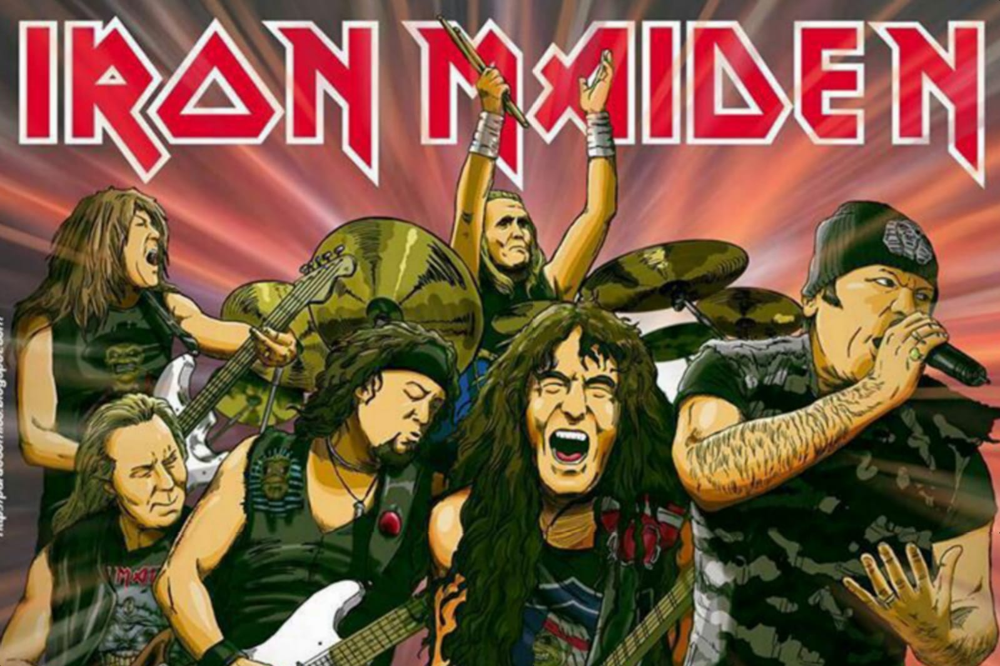

Álbuns
Iron Mainden
Iron Maiden é uma banda inglesa de heavy metal formada em Leyton, East London, em 1975 pelo baixista e compositor Steve Harris.
Iron Maiden AlbunsAC/DC

AC/DC é uma banda australiana de rock formada em Sydney, Austrália em 1973, pelos irmãos escoceses Malcolm e Angus Young. O estilo musical da banda é normalmente classificado como hard rock e até mesmo blues rock. Mas seus membros sempre classificaram a sua música simplesmente como "rock and roll".
AC/DC Albuns